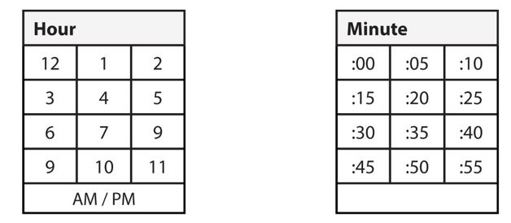

Type 1: Designing a Product
These questions aren’t nearly as open-ended as they sound. You want to approach these questions like a good PM would: with a structured approach that starts with the user.
Remember: it’s not about what you want the product to be. It’s about what the user wants.
The Approach
We’ve offered one framework that works well for these problems, but there are other frameworks too. Good frameworks have the following in common: they ask appropriate questions, understand and assess a goal (often a good user experience), and apply a structured approach to accomplish that goal.
Step 1: Ask questions to understand the problem
Before you can even start to answer the question, you need to make sure you understand what the question is. It might not be what you think.
For example, suppose you were asked, “Design a pen.” That’s a pretty straightforward question, right? Not necessarily.
The pen could be:
Clearly, each of those people would need a very different pen. They would need a different size, color, and feature set.
Are they trying to trick you? Yep, in a sense. However, a PM who just dives into creating a product without understanding the goals might create something that is radically different from what the user needs.
Step 2: Provide a structure
Interviewers are looking for structured thinking. The easiest way to show this is to give a structured answer and call out which part of the structure you’re on. For example, you might say something like, “First I’m going to talk about the goals. Then, I’m going to list out some potential features. Finally, I’m going to evaluate each of those features against the goals. Okay, so starting with the goals...”.
This will communicate to your interviewer that you approach problems in a structured way. It will also help keep your thoughts and those of your interviewer straight.
Step 3: Identify the users and customers
Now that you understand the question itself, you should identify who the users and customers are. Ask more questions if you need to.
In some cases, the users and customers aren’t the same person. The customer is the person paying for the product; the user is the one using it. There also may be multiple users.
Example: “Design a calculator for kids”
In this case, the interviewer has told us who the user is. Or have they? There are, of course, many kids in the world and they’re not all the same. The child is also not the only user.
We have the following potential users or customers:
Depending on the type of calculator, there could be even more users. For example, if the calculator is designed specifically for a textbook, then you might also include textbook publishers. Or, if the calculator is being used within a classroom, the school or school district might be the purchaser. This might require special consideration.
Example: “Design a better stove”
As with the “design a pen” example, the stove could be a bit different than we imagine. Is it for household usage? For a large restaurant? For kids? We’ll need to ask questions to figure this out.
Let’s suppose there’s nothing funky going on here. We’re just designing a stove for normal home usage. Still, we’ll want to think about the different types of users. This could include:
Each of these people will have different requirements.
Thinking about Users
With each question, think about where the product is being used and who else might interact with it. As a good rule of thumb:
We have to design for all of those people, so it’s important to call out who they are.
Step 4: What are the use cases? Why are they using this product? What are their goals?
For each user (if there’s more than one), make a list of the use cases. This is a list of the different tasks or scenarios that a user might want to use the product for.
For example, if we’re designing a keychain for the elderly, the use cases might include:
You’ll need to assess, either by yourself or by discussing the situation with your interviewer, which use cases to design for. You might decide that all of them are very important, or you might decide that some use cases are less important than others.
You can also think about these goals at a higher level. You can think about not only what you do with a product, but why you do it. What is the underlying motivation? For example, the underlying motivation for the keychain might be independence.
You want to convince your interviewer that your product will change the world by appealing to the underlying motivations, goals, and use cases.
Step 5: How well is the current product doing for their use cases? Are there obvious weak spots?
Go through each use case and assess how well the current products or solutions address those. What are the user’s biggest issues with the product? These are the areas you will focus your design on.
If there are multiple users (for example, the elderly person and their caretaker), we may need to assess their use cases separately.
In many cases, and especially when you get a question in the form of “Design a _______ for the _______,” it can be useful to think carefully about what makes this type of user special. For example, an elderly person often has limited mobility and dexterity, but they are about more than just their limitations; they also have particular values. They might care deeply about family connections, or prioritize healthcare or stability. We’ll need to keep this in mind for our design.
Step 6: What features or changes would improve those weak spots?
Up until now, we’ve just been assessing the current problem and needs. It’s good we spent all that time defining the problem. This will help us come up with a solution that’s truly tailored to their needs, rather than to what you personally would want.
In many cases, we will want to solve the issues with multiple use cases at once. For example, the solution to adding a key to the keychain is very closely tied to the solution to remove a key from the keychain.
A good way to handle this section is to name a few ideas and then ask the interviewer if they want you to dive deeper into any of them.
Make sure to explicitly tie your feature ideas to the use cases or goals. Make it really, really clear you’re coming up with ideas that are customer focused, not just things you’ve always wanted.
If you start to run out of ideas, go back to your use cases and be willing to get a little more creative. If the interviewer really seems to expect you to have more ideas, ask if there are any that she thinks you didn’t explore sufficiently.
This is a good spot to use the whiteboard as well.
Step 7: Wrap things up
As a final step in the interview, it can be useful to give the interviewer an overview of your solution. This is especially important if you’ve been talking for a while. You might have gone over many solutions to the problem, and your interviewer may be unclear as to your current proposal.
If you haven’t touched the whiteboard yet, this may be a good time to do so.
Example: Design an Alarm Clock for the Blind
Let’s walk through this problem step by step. Note that this is only one solution. There are many ways to respond to this question.
Step 1: Ask questions to understand the problem
In this situation, we’re told explicitly who the user is. However, this information may be only half true.
What kind of blind person? Many people who are blind can detect light or even see blurry shapes. Second, blind people can be children, adults, or elderly people. They may even have additional disabilities. If we’re designing for a specific type of blind person, this will affect our product.
We should also understand where the blind person is using the alarm clock. Will this be an alarm used at home, or perhaps one for travel? Is it even a physical alarm clock, or could the interviewer be asking about a mobile app designed for blind people?
Let’s assume our interviewer confirms he’s thinking of a fully blind person—zero ability to see—and that he would like us to design for a blind adult who will be using a physical alarm clock at home.
Step 2: Provide a structure
The approach in this problem is essentially the structure we offer to the interviewer.
Okay, now that I understand the problem, I’m going to tackle this in a few parts. First, I’ll think about who the users are and what they’re using the alarm clock for. Second, I’m going to compare existing alarm clocks against these use cases to see where the gaps are. Then finally, I’m going to discuss how we can fill in these gaps.
As you go through these steps, make it clear to your interviewer when you’re transitioning from one step to the next. You could say something like, “Now that we’ve identified the users, let’s move on to evaluating existing alarm clocks.”
Phrasing Questions
Be careful about how you phrase your questions. A question like, “What does the blind person do?” can sound like you want your interviewer to solve problems for you. However, if you word it as “Is there anything we know about what a blind person does?” makes it clear you’re trying to work collaboratively with your interviewer.
If your interviewer pushes back with a question such as “What do you think?” that’s a sign to stop pushing with the questions.
Step 3: Identify the users and customers
We have one user in mind already: a fully blind adult.
Who else might use the alarm clock? A blind person is likely around non-blind people, such as their spouse, children, or healthcare workers. Could you imagine if your spouse bought an alarm clock that you couldn’t turn off? Yikes! An alarm clock for the blind still needs to be moderately usable by non-blind people.
Step 4: What are the use cases? Why are they using this product?
The core use case here is presumably to wake up from sleep, usually in the morning but possibly for naps as well. This means he’ll need to check if the alarm is set, configure the time, enable the alarm, be woken up by it, snooze the alarm, and disable it.
Could there be other reasons why the blind person uses the product? Sure!
I’ll assume the primary function we want to design for is the wake-up-from-sleep one.
Checking the current time is certainly an important use case for alarm clocks in general, but it may not be an essential one for blind people. People use an alarm clock to check the time because it’s highly convenient (that is, the time is right there, staring at them from across the room). Unless we can achieve similar convenience, blind people probably wouldn’t use the alarm clock for this purpose. They would default to using whatever they otherwise use to check the time.
Step 5: How well is the current product doing for their use cases? Are there obvious weak spots?
A standard alarm clock relies on visual indicators for almost everything. We know if the alarm is on or off based on a light on the alarm clock. We know the current time because we can read it on the display. We just look at the alarm clock to know if the device is plugged in. Essentially, the only thing we don’t use a visual indicator for is waking up.
This poses a number of challenges for a blind person, since he won’t be able to see the visual indicator.
We now need to resolve these issues.
Step 6: What features would improve those weak spots?
We want to keep the alarm clock simple to use. Complicated designs are no fun for anyone, blind or not.
Design 1: Audio Playback
The major issue we’ll need to design around is the lack of visual display. As a very simple approach, we can use audio playback, in addition to a visual display.
The benefit here is it’s easy to build audio playback, and the use of a visual display would make the design usable for non-blind people as well.
However, it has a major drawback: it might wake up the blind person’s partner or spouse. We’ll work with this approach for now, though.
Turning on / off alarm + Ensuring the alarm is plugged in
Like a standard alarm clock, this alarm clock could have a button that turns the alarm on and off. We will provide audio feedback when we set the alarm to indicate either “the alarm is on” or “the alarm is off.” This also makes it easy to ensure the alarm didn’t get secretly unplugged.
Checking if the alarm is set
To keep things simple, we can just reuse the button that turns the alarm on and off. We don’t really need a special button for this.
Snoozing the alarm
To snooze, we will have a separate “snooze” button, much like a normal alarm.
Setting the alarm time
To set the current alarm, we can offer “up” and “down” buttons to change the hour and minute hands. When we press a button, it announces the current time.
Doing this on every single button press might be a bit slow though, particularly when changing the minute. Instead, we can design it so that if you hold down the “up” or “down” buttons, it suppresses the audio playback until the button is released.
Setting the current time
We can set the current time essentially the same way that we would set the alarm time.
Design 2: Limited Audio Feedback
As we said earlier, the issue with using audio playback is that it might disturb others in the room. We may want to design a more advanced alarm clock that doesn’t rely on audio playback for the most common functions (particularly those that might be done while the user’s partner is asleep): turning on and off the alarm and setting the alarm time.
Turning on and off the alarm
Instead of audio feedback, we could use a physical switch (much like a light switch) to turn the alarm clock on and off. The risk here is that the alarm clock could wind up unplugged and the user wouldn’t know.
Instead, we can still use a single button to toggle the alarm. Instead of audio feedback, the clock will vibrate once to say “alarm is on” and twice to say “alarm is off.”
Checking if the alarm is set
Again, we will just reuse the button which turns the alarm on and off. The vibration feedback will tell us if the alarm is set.
Setting the alarm time
To set the alarm time, we can have several rows of buttons on the side of the alarm clock. Each button would have the number written in braille as well as in colored text for a non-blind person. Since we’re using buttons to set the time, we don’t need to use audio playback.
Hour | 12 | 1 | 2 | 3 | 4 | 5 | 6 | 7 | 8 | 9 | 10 | 11 |
Minute | 0 | 1 | 2 | 3 | 4 | 5 | 6 | 7 | 8 | 9 | AM / PM | |
0 | 1 | 2 | 3 | 4 | 5 | 6 | 7 | 8 | 9 | |||
The AM / PM button would be pushed in to indicate it’s set to AM, otherwise it would be set to PM.
This might be far more buttons than we really need. Does anyone really need their alarm clock to be capable of setting their alarm for exactly 9:23 a.m.? Probably not. Setting the alarm to 9:25 or 9:20 would work just fine.
Let’s remove some of these buttons to clean up our design. Simplicity is a good thing in design.

We could potentially simplify this even more, by just listing :00, :15, :30, and :45.
Alternatively, we could replace the minute buttons with a circular dial. However, a dial for the hours could be a bad idea, since someone might accidentally set the switch to the wrong hour.
Step 7: Wrap it up
Depending on the priority we place on not disturbing the user’s partner, we may or may not use audio feedback. You could mention to your interviewer the sales benefit of marketing the alarm clock as non-intrusive to bed partners.
The first design uses audio feedback to basically replicate what the physical display does. We still have a visual display, in case non-blind people use the device, but we announce any alarm or other changes out loud. The only non-obvious change here is suppressing the time-change announcement when we hold down the “up” or “down” arrows.
If we’re concerned about waking up the user’s partner, we can remove the audio feedback and replace it with vibration (to indicate the alarm status) and physical buttons (to set the time).
In either case, we will keep the physical display to ensure the device is usable by non-blind people as well.